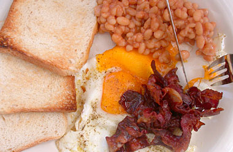

Begin de dag met...
maandag 21 juli 2003 | Persoonlijk
... een gezond en evenwichtig English breakfast! Moet even gaan liggen nu.

maandag 21 juli 2003 | Persoonlijk
... een gezond en evenwichtig English breakfast! Moet even gaan liggen nu.
